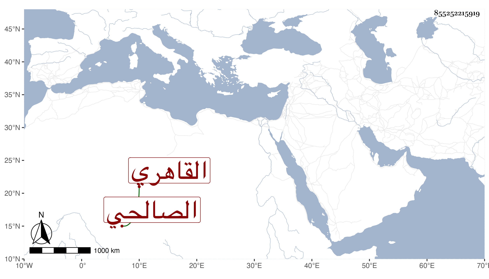

0902Sakhawi.DawLamic.ITO20230111-ara1.EIS1600.855252215919
Biography ID: 855252215919
194
محمد بن موسى بن إبرهيم الشمس أبو البقاء بن الشرف بن سعد الدين الصالحي القاهري أخو أبي فتح الماضي وعم عبد القادر العنبري . زعم أنه سبط العز بن عبد السلام وأنه ينتمي للزبير بن العوام أيضا وأنه كان يحفظ القرآن والتنبيه ولازم الشريف الطباطبي ومحمد الأندلسي وأحمد الوراق تجرد ودام سنين متقشفا جدا بعد مزيد التنعم . مات في ليلة الاثنين ثامن عشرى جمادى الثانية سنة خمس وتسعين وقد جاز التسعين وشهد أمير المؤمنين الصلاة عليه تقدم الجماعة البرهان بن أبي شريف رحمه الله .
